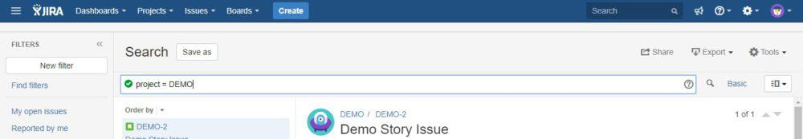

Before we get into the nitty gritty of how to use Jira, I'll give you a quick overview of what Jira actually is.
Jira is an issue tracker that can be extended into a bug tracker, an incredibly powerful service desk and/or a feature-rich project management tool for agile teams. More precisely, you have Jira Core, Jira Software and Jira Service Desk. Each one of these Jira's has its own capabilities, specializing towards different use cases. In this article we'll be focusing on the basic issue related functionality of all 3 products.
But what's really so incredibly powerful about Jira is its flexibility. Allowing Jira admins to customize almost anything to suite the separate teams' way of working.
Jira is often used by development teams. But it's also suitable for anyone who needs to manage projects or processes (whether you're in marketing, accounting or even sales).
Especially Jira Software is particularly geared to the responsive, iterative and customer-centric work patterns of the agile methodology.
At this point I'll assume your admin has set up the system and given you account access.
To get started your admin will need to set up a project for you and/or your team to work in.
So what is a Jira project?
A project is a container that groups tasks together. This group of tasks could cover either a single day's work or jobs that will take your team months to complete.
To create a Project go to Projects and select Create Project from the menu.
You'll then need to choose what type of Project you want to create – for now we'll select Scrum Software Development. Then you need to give the project a name and a key (a shortened term to represent it) and designate a project lead. Voila! You have a Project in place and can start creating Issues.
If desired, you can customize permissions on a per-Project basis or can apply permission schemes to multiple Projects to simplify the process. However, these are admin changes, so not something that most users will need to worry about.
A good starting point with Issues is the fact that they don't have to be problems (such as software malfunctions or customer complaint tickets). Instead, they can be used to track almost anything (for example, using Jira to track CVs for the recruitment of your next hero).
Out of the box, Jira comes with four standard issue types (which can be extended by your administrator):
– Story: a user story – perhaps a feature that needs to be created
– Task: a task that needs to be completed
– Bug: a problem to be fixed
– Epic: a large body of work that may take some time to complete
A common stumbling block in Jira is that many users struggle to understand how to create Issues. To get started, look for the button labeled "Create". Hit this to create an issue.
To start editing your Issue, select the relevant Project (getting the correct Project will save headaches later if you find that you want to move the issue), the Issue type and the reporter (if it isn't you).
You can then write a brief summary of the Issue and then a detailed description of what is needed.
Tip: be specific and don't assume the person you are sending the Issue to is familiar with it as providing detail will save time and misunderstandings later.
You can also add labels (to describe the Issue) and attachments (like screenshots or documentation).
You can set the priority of the Issue, indicating how important it is. Ranging from lowest to highest.
You can designate a period in which the job needs to be completed (Sprint); and you can define who the Issue is assigned to, to make sure that it ends up in the right hands.
You can connect one Issue to another with Linked Issues.
Linking Issues enables you to define relationships between them – for example, identifying one Issue as being blocked by another, being a duplicate of another or being related to another.
You can also clone issues (perhaps if an old task needs to be repeated; if an Issue needs to be created and separately tracked on multiple Projects; or if there is a recurrent Issue that needs to be looked at again).
To change the Project that the Issue is attached to or its Issue Type, go to "More" then "Move".
Once, there, select the new Project that you want to attach the Issue to.
You can also use "Move" to change the Issue type.
In some cases you may want to break Issues into multiple smaller tasks. These are called "sub-tasks".
From an organizational point of view, it's sensible to keep separate Issues distinct rather than to bundle large amounts of work in a single Issue. However, if there are several discrete steps to completing a task, then it may be useful to define them (just like you would find several steps to completing a recipe).
To create a Sub-Task on an existing Issue, click "More," then "Create Sub-Task." Sub-Tasks can be opened, closed, cloned and deleted.
They can also be converted into Issues and Issues can be converted into Sub-Tasks.
There are several ways to track time spent on Issues in Jira.
The first is to attach estimates of time spent to an Issue, using Jira's detailed time tracking tools. For this, you can use the "Original Estimate" field on Issues, as well as "Time Remaining" and "Time Spent", all of which gets added to the user's personal worklog.
The second is to create a "Time Since Issues Report" or a "Resolution Time Report" from the Reports section.
The third is to use a Jira app to track time spent on issues on a minute-by-minute basis.
Issues don't have to stay open forever. The simplest workflows allow you to move Issues from being "To Do", to "In Progress", to "Done".
These states can be selected from the tabs at the top of the screen when editing an Issue.
This is useful as it communicates the status of the task to your team – providing transparency on what's on everyone's to-do lists. And what they have lined up next.
Additional stages might include Reopened (jobs sent back for revision) and Closed (jobs that no longer need to be done).
What is also very important to note is that your admin can create custom workflow conditions to reflect your specific business requirements.
The reporter and the assignee of an issue will automatically receive notifications about the issue.
However, it may also be useful for other users to get updates when changes are made. If they're waiting on it to be finished or are working on related tasks, for example.
These users can become "watchers".
This power feature allows you to be cc'd on all information exchanged.
You can select watchers by going to the Watchers field on the Issue, clicking the number and selecting the user from the "Add Users" menu.
Anyone viewing an Issue can also comment on it with the comment field at the bottom of the page.
Comments can be directed to specific users by mentioning them – achieved by typing @ followed by their username. This will email the user a link to the issue.
To share an Issue, click the ‘Share" button in the top right of the screen while viewing an Issue. Next, type the usernames or email addresses of the individuals you want to share the issue with. You can also attach a note with the message.
By default, you will receive notifications about changes and comments on Issues that you have reported, that you have been assigned or that you are watching.
If you're receiving too many email notifications, you can ask your admin to create a custom notification scheme or disable notifications for you.
Keyboard shortcuts can offer a powerful way to accelerate your use of JIRA – and you can complete whole Projects without using a mouse. To learn about shortcuts, check out our Tips and Tricks article here.
As well as viewing Issues by Project, you can also find them via search.
In the top right of the screen is a search field. This allows you to search for Issues and Projects as well as keywords that appear in Issue descriptions and comments.
To narrow down your search, you can refine the query by Project, Issue type, status and assignee. For instance if you type ‘my open bugs', Jira will create a list of all bugs in status open and assigned to yourself.
When handling Projects, there can potentially be large numbers of Issues flying around. Because of this, it can be useful to use filters to isolate the most important issues.
By default all Jira boards have the filters "Only My Issues" and "Recently Updated".
But other useful filters might include "Created Recently" or "Reported By Me".
From the search page, you can save a filter with the "Save as" button.
To share filters, click on Find Filters on the search page. Find the filter you want, then click the cog button and then edit. You can then specify the specific groups or Projects you would like to share the filter with.
A powerful way to track changes across the system is to subscribe to a filter. This will send you the results of the query by email – and can allow you to:
To start, use the search form.
Next save the filter.
Once saved, to the right of the filter's name will be the word "Details". Follow this and then click New Subscriptions.
Then set the specifications you want and subscribe.
When viewing a Project, you'll see a link to reports in the left sidebar. This will take you to the wide range of reports that are available.
Among other functions, these allow you to analyse the resolution of Issues, their age, the progress of Sprints and the team's overall workload.
Do keep in mind, of course, that reporting is only available on a per-Project basis, rather than to track activity across your entire system.
Jira Query Language (JQL) allows you to supercharge your searches within Jira by using expressions to specify exactly what you want.
To start entering a JQL search, go to the search page and click Advanced.

For example you might use the expression:
assignee = "joebloggs"
To specify a filter to only display Issues assigned to the user joebloggs. You can also add multiple levels of specification, for example to filter Issues within a specific Project assigned to user joebloggs.
Some of the things you can search for include:
Users: Assignee, Creator, Reporter and Watcher
Issue/Project details: Attachments, Comment, Created, Description, Duedate, Priority, Project, Sprint, Status and Type
You can use multiple terms to narrow a search – for example, Issues either assigned to joebloggs or in a specified project could be searched for the following search:
assignee = "joebloggs" OR project = "Using JQL"
Or to find issues not assigned to joebloggs – using "!=" – that are in a single project:
assignee != "joebloggs" AND project = "Using JQL"
If you're looking for an unassigned issue you can use the term NULL, as in:
assignee = NULL
When searching in a time period you can use the greater than, equals and less than symbols – for example:
duedate >= "2018/01/01"
When searching comments or descriptions, the symbol "~" provides text containing a term while "!~" excludes text containing a term – for example:
Comment ~ "solutions" AND Description !~ "worries"
You can export information from the Jira search page by simply clicking the Export button in the top right of the screen.
This allows you to export filtered information as a CSV or an XML file; as an RSS feed; or in printable format.
Do keep in mind, however, that it's often unnecessary to export information, and filters can simply be shared if necessary or the information can be viewed on a shared monitor – allowing the entries to be dynamically filtered and edited, rather than being viewed in a static format.
Your dashboard is what you see when you log in to Jira.
By default, Jira will display Issues assigned to you and an activity stream. However, there are a lot of other items that it can be extremely useful to add to your dashboard.
To create a personalized, custom dashboard click "Dashboards" then "Manage Dashboards." On this page, click "Create new dashboard."
To customize your dashboard, go to your dashboard and then click "Add Gadget."
Gadgets you can select to add to your dashboard include and "Filter Results" (for a specified filter), "Issue Statistics," "Issues In Progress," "Projects" and "Watched Issues."
Using these gadgets can give you a quick overview of activity and progress on the platform.
When creating a dashboard, you can share it from the "Create Dashboard" screen. If you've already created one then you can share it by going to the dashboard's page, clicking the ellipsis button in the top right (with a "..." on it); and clicking "Share Dashboard."
Dashboards can be shared between groups, Projects or for any logged in user.
ira offers a very dynamic toolset straight out of the box.
But teams all around the world have specific requirements that would not be intuitive to add to Jira straight out of the box.
That's where the Atlassian Marketplace comes in.
The Atlassian Marketplace offers you thousands of add-on possibilities to extend your jira with capabilities beyond belief.
Several apps allow Jira to be used as a business CRM, for example. While others, like Table Grid Editor, allow you to embed Excel-style tables directly into Issues. There's als Exalate, an app to synchronize Issues across multiple Jiras. And many, many more.
Apps can be extremely powerful and show off just how flexible Jira can be.